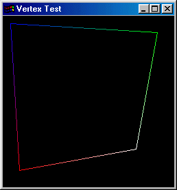

urce source source source source source source source source source source |
[program six] This example shows how to set up and use opengl vertex arrays. Conceptually they are very similar to direct3d vertex buffers. Naturally, this being opengl, they are less of a pain to use. We a popular extension, compiled vertex arrays. glLockArraysEXT will keep the transformed vertices on the 3d card meaning that they do not need retransforming if the object is drawn more than once (light-maps and bump-mapping both require more than one rendering 'pass'). It wouldn't mkae much difference in this simple example, but can when the number of polygons is high.

Function pointer variables are declared for the extensions - the definitions to these reside in the gl.h include file. A single floating point number 'angle' will be used to store the rotation of the object.
[1] PFNGLLOCKARRAYSEXTPROC glLockArraysEXT
= NULL;
[2] PFNGLUNLOCKARRAYSEXTPROC glUnlockArraysEXT = NULL;
[3]
[4] float angle;
Over the next five lines we declare and populate the arrays that will hold our object data. Notice that there is nothing particularly special about these arrays - we don't have to declare them as special types or anything like that. Line 1 holds the list of vertices, they are stored here in an 'unwound' x,y,z format. The data on line 3 contains the colours that each of the vertices will have - these are stored in r,g,b format. Finally, line 5 consists of the indices opengl requires to draw the object. When we render it, the value 0 will look up the first x,y,z and r,g,b triples from the other arrays. It's all quite simple.
[1] GLfloat vertices[] = { -1.0, 1.0, 0.0,
1.0, 1.0, 0.0,
1.0, -1.0, 0.0,
-1.0, -1.0, 0.0 };
[2]
[3] GLubyte colours[] = { 255, 255, 255,
0, 255, 0,
0, 0, 255,
255, 0, 0 };
[4]
[5] GLuint indices[] = { 0, 1, 2, 3 };
This function
gets the extensions for us. We call
wglGetProcAddress
to fetch the pointer to the
function from the opengl driver. From now on when we call glLockArraysEXT
it'll use the correct
function.
If the pointer glLockArraysEXT
is still NULL
after this, its safe to assume that your driver doesn't support the extension.
[1] void get_CVA_ext ( void )
[2] {
[3] glLockArraysEXT = ( PFNGLLOCKARRAYSEXTPROC
) wglGetProcAddress ( "glLockArraysEXT" );
[4] glUnlockArraysEXT = ( PFNGLUNLOCKARRAYSEXTPROC )
wglGetProcAddress ( "glUnlockArraysEXT" );
[5]
[6] if (( glLockArraysEXT == NULL ) || ( glUnlockArraysEXT == NULL ))
[7] printf ("Error: get_CVA_ext ( ) -
No Vertex Array EXT\n");
[8] }
It's nice to get away from setting lighting up isn't it? This init function gets the compiled vertex arrays extensions. Line 5 sets both front and back facing polygons to be rendered as GL_LINE - effectively placing opengl in wireframe mode. Lines 8 and 9 enable the vertex and colour arrays on the client side (don't worry about what this means too much).
[1] void init (
void ) This function draws our object. Line 3 tells opengl to
use the array '
[2] {
[3] get_CVA_ext ( );
[4]
[5] glPolygonMode ( GL_FRONT_AND_BACK, GL_LINE );
[6]
[7] glEnable ( GL_DEPTH_TEST );
[8] glEnableClientState ( GL_VERTEX_ARRAY );
[9] glEnableClientState ( GL_COLOR_ARRAY );
[10] glClearColor ( 0.0, 0.0, 0.0, 0.0 );
[11] }
Line 6 locks the arrays - see the spec. for details. Line 8 draws our
object using the arrays we've specified above for its coordinates and colours.
[1] void draw_object (
void )
[2] {
[3] glVertexPointer ( 3, GL_FLOAT, 0, &vertices );
[4] glColorPointer
( 3, GL_UNSIGNED_BYTE, 0, &colours );
[5]
[6] glLockArraysEXT ( 0, (GLsizei)4 );
[7]
[8] glDrawElements
( GL_POLYGON, 4, GL_UNSIGNED_INT, indices );
[9] }
You should be getting
the hang of this by now, so I won't go into details with the other functions
:) Website and
content, Paul Groves